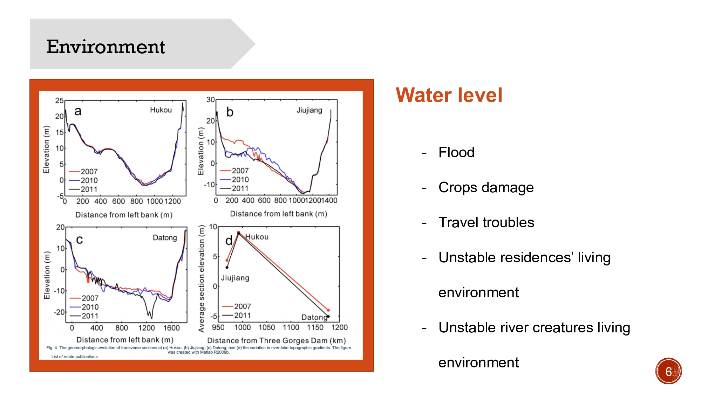
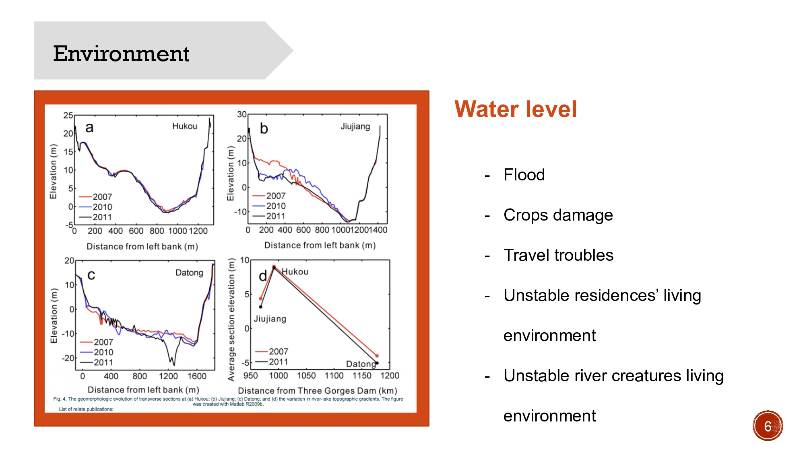

Three Gorges Dam
Project:
Web Design
This website related to THREE GORGES DAM. It asked me to explain how the man-made construction impact to local residents and natures with a clear manner.

PRoject Introduction
Project Description
This is the final project of IAT235 course. This project created a website that could show a communicating complexity with a clear manner. The main issue was trying to clear up for stakeholders involves some kind of human-technical-environmental 'thing', like system, process, phenomenon, institution, etc.. In this project, we focused on how the Three Gorges Dam influenced building Local residences’ life and living condition.
WORK PROCESS

What Did I Do?
This is a group project. I was responsible for in the about, info, and the javascrip part of data.
Challenge & Solution
The challenge of this project was to find an relative accurate information about the topic and “human, technology and environment”. Additionally, finding stakeholder is our biggest resistance and how to display a suitable information and images to our stakeholders.
To solve the challenges we used the charts and data to explain the complex the environment changing. And also, narrowing the range and find a specific audience.


 

Wireframe
For present the clearly idea, I draw a detailed wireframes for website design.The wireframe showed the clearly interactions and workflow.

Reflection
This project was a good web design experience for me. It helped me know more about html and cuss. And also, helped to improve my ability to solve problems, and learned some knowledge about making web pages and some basic network technologies. At the same time, I also learned that some good web design should have principles,
1. Determine what the web design is about: a good website should have a clear theme. In other words, you must make clear what your website has for and what it is used for before beginning. All pages are made around this content. Having clear content plays an important role in ranking.
2. Know the target audiences of your website: The user is the key to the success of a website. They could spend a lot of time on your website, or immediately shut down your website. Thus, as a designer must to know what your audiences think about? What they looking for?
3. Optimize content:Content is the core of the entire website. The content arrangement of the website must be clear before the website design,